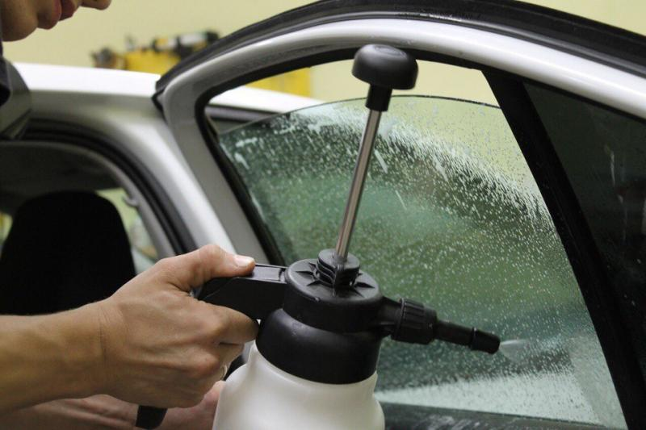
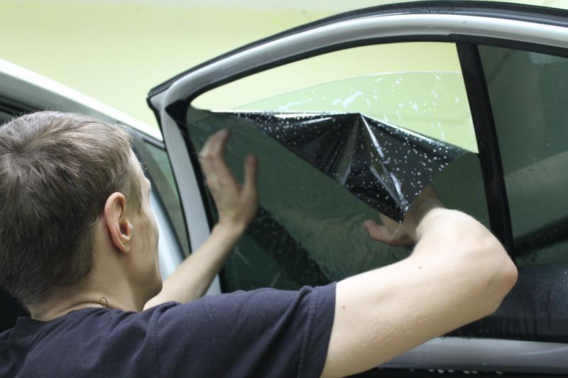
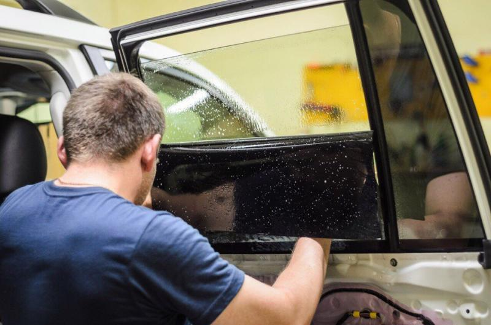

Тонирование
Тонирование стекол автомобиля профессиональными пленками, а так же пленками проходящими ГОСТ.



Цены на тонирование темной пленкой
Задняя полусфера (заднее стекло + задние боковые стекла)
| Услуга | Цена |
|---|---|
| Хэтчбеки | 3.500 рублей.* |
| Седаны | от 4.500 рублей.* |
| Кроссоверы и седаны бизнес класса | от 5.000 рублей.* |
| Джипы | от 6.000 рублей.* |
Передняя полусфера
| Услуга | Цена |
|---|---|
| Передние стекла | от 2.500 рублей.* |
| Лобовое стекло | от 2.500 рублей.* |


Цены на тонирование атермальной пленкой проходящей ГОСТ
Передняя полусфера (лобовое стекло + передние боковые стекла)
| Услуга | Цена |
|---|---|
| Средний класс | от 7.000 рублей.* |
| Кроссоверы и бизнес класс | от 8.000 рублей.* |
| Джипы | от 9.000 рублей.* |
*Стоимость указана за тонирование пленкой UltraVision в г. Нижний Тагил. Точные цены уточняйте у менеджера по телефону. Также работаем с другими пленками.
Гарантия
Мы используем высококачественные американские металлизированные пленки и даем на них пожизненную гарантию.